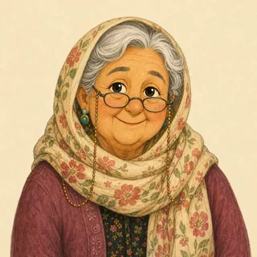

The storyJingle, Jangle and Little Grape


Grandma RoseHere is a very old story. Children in Iran have heard it for a long, long time.Once upon a time, a mother goat lived in a little house near the woods. She had three kids. Their names were Jingle, Jangle and Little Grape.

One morning, Mother Goat had to go and find grass.
Mother GoatLock the door when I go. Open it only for me. When I come back, I will sing our secret song.
Mother GoatAnd remember: I have a soft voice and white feet. The wolf has a rough voice and black feet.
The kidsWe will remember!

Soon there was a knock at the door. Knock, knock, knock!
The kidsWho is it?
WolfOpen the door, my dears. It's your mother!
The voice was rough and loud. Jingle looked at Jangle.
JingleYou are not our mother. Our mother has a soft voice. You are the wolf!

The wolf ran off. He ate a big spoon of honey to make his voice sweet. Then he came back.
WolfOpen the door, my dears. It's your mother!
Now the voice was soft and sweet. Jangle was not sure. "Show us your foot," he said. A big black foot came under the door.
JangleYou are not our mother. Our mother has white feet. You are the wolf!

The wolf ran to the baker. He rubbed his feet in white flour. Then he came back again.
WolfOpen the door, my dears. It's your mother! Look at my white feet.
The voice was soft. The foot was white. Jingle and Jangle ran to open the door.

Little GrapeWait! A wolf can make his voice soft. A wolf can make his feet white. But only Mother knows our secret song. Sing it, please!
The wolf did not know the song. He hummed. He coughed. He sang "la la la".

The kidsThat is not our song. You are the wolf! Go away!
The wolf was so cross that he ran far into the woods, and he never came back.

At last, Mother Goat came home. She sang the secret song, every word. The kids opened the door and gave her a big hug.
Mother GoatHow did you know it was really me?
Little GrapeA voice can be copied. A white foot can be faked. But nobody else knows our song!
Grandma RoseIn some old books the wolf is very scary. In our story, he just goes away. Now, Ava, Sam: how did Little Grape know?
An old Iranian folk tale, also told by the Brothers Grimm as "The Wolf and the Seven Young Kids". We retold it with a gentler ending.